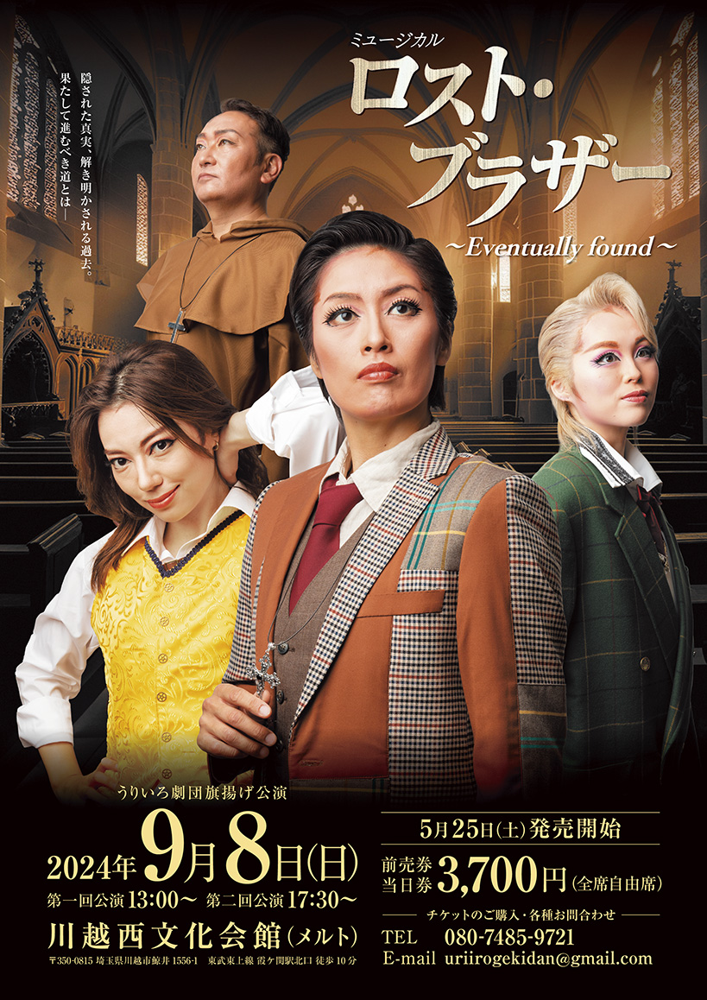
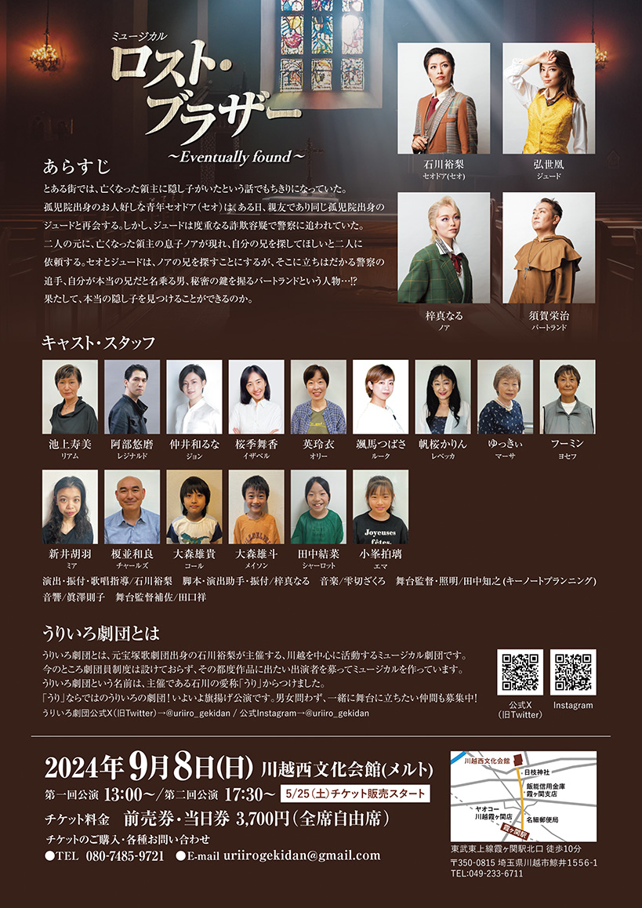

| Lost Brother Takarazuka Revue Flyer | |
|---|---|
|
For this flyer, I aimed to capture a mysterious and enigmatic atmosphere that intrigues and engages the viewer. The design is meticulously crafted to reflect the shadowy allure of the story, drawing attention to the key characters and their unique features. By blending these elements, the flyer not only promotes the event but also offers a tantalizing glimpse into the captivating world of "Lost Brother," leaving the audience eager to discover more. |
|
| Concept | Mysterious and Enigmatic Atmosphere. |
| My role | Designer |
Graphic design
1 / 1
 